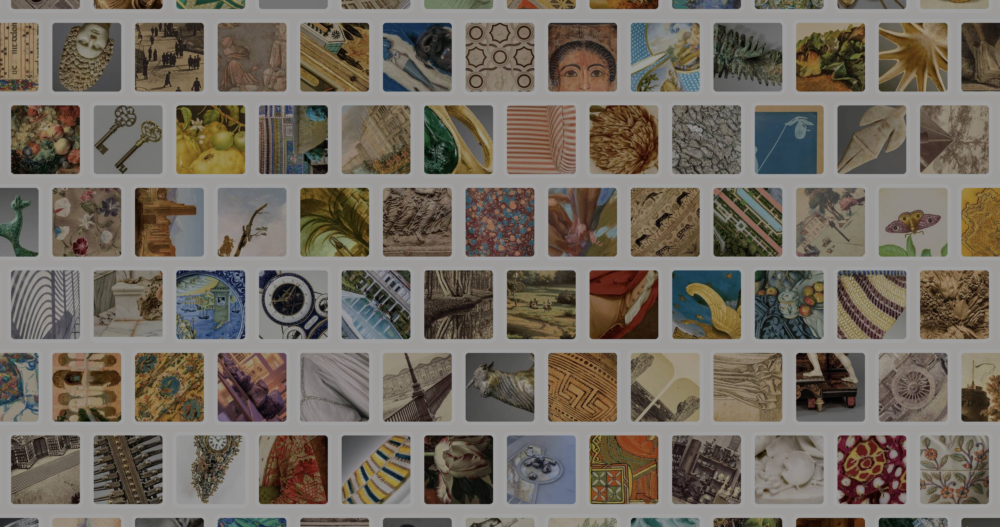
Getty Museum Portal
Explore The Getty collection with OuiSi
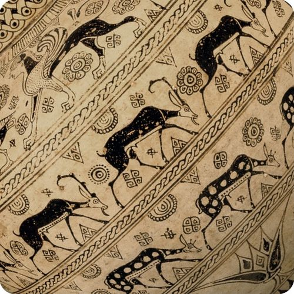
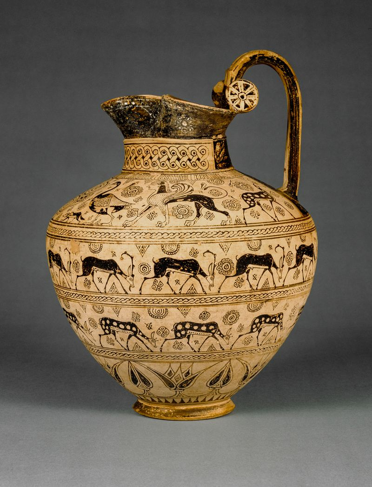
Paintings, pottery, and photographs
Each Art Card in OuiSi Getty is a snippet of a larger artwork that highlights a particular pattern, shape or color. This open-eyed "reframing" invites curiosity and the question "What am I looking at?" The answer is found in the OuiSi Getty portal, where players can learn about the artwork depicted and about the artists themselves.
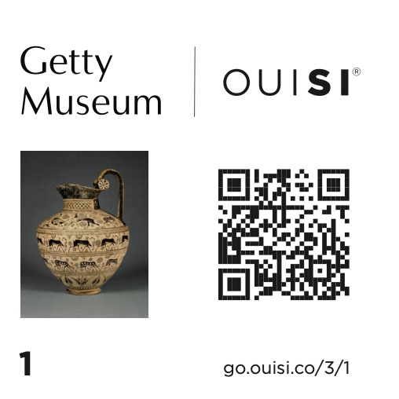
OuiSi QR Codes
Access the OuiSi Getty Learning Portal
With your phone, scan the QR code on the back of any Art Card, and open the OuiSi link that appears. Or, you can enter the number indicated on the back of your Art Card in the box below.
Sample OuiSi Getty Art Cards
-
Oinochoe
Unknown artist/maker, about 625 B.C.
Card 1
-
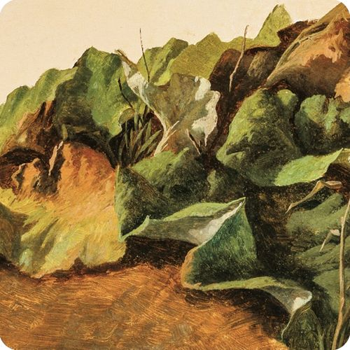
Large Butterburr Leaves and Grass
Gilles-François-Joseph Closson, about 1825–1829
Card 2
-
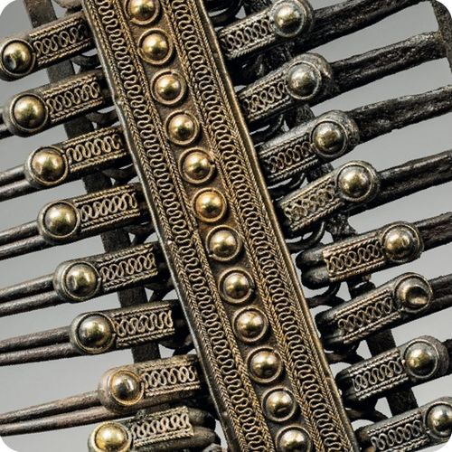
Comb Brooch
Unknown artist/maker, 700–650 B.C.
Card 3
-
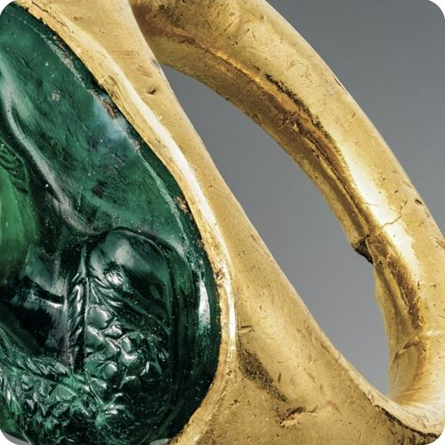
Cameo Gem with Minerva set into a Hollow Ring
Unknown artist/maker, 1st century A.D.
Card 4
-
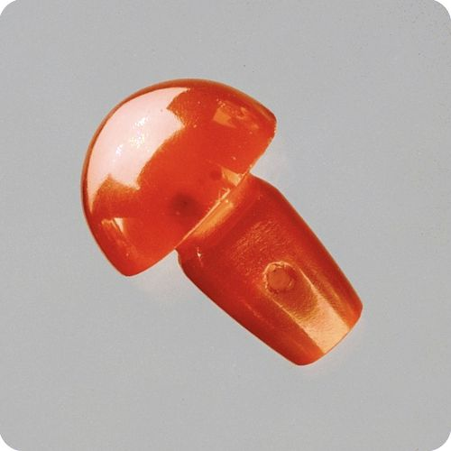
Twenty-eight miscellaneous beads and one stud
Unknown artist/maker, 225–175 B.C.
Card 5
-
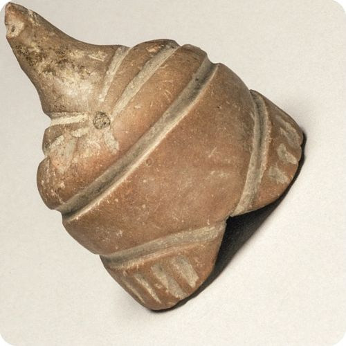
Fragmentary Neolithic Standing Female Figurine
Unknown artist/maker, 6th–5th millennium B.C.
Card 6
-
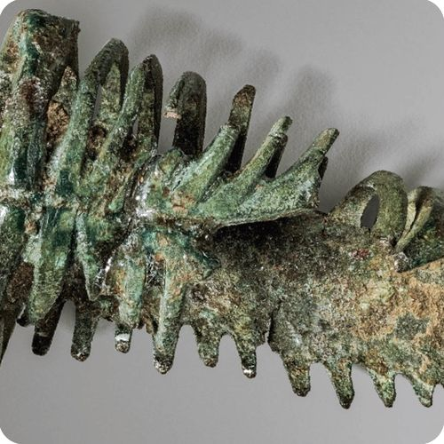
Miniature Skeleton
Unknown artist/maker, 25 B.C.–A.D. 100
Card 7
-
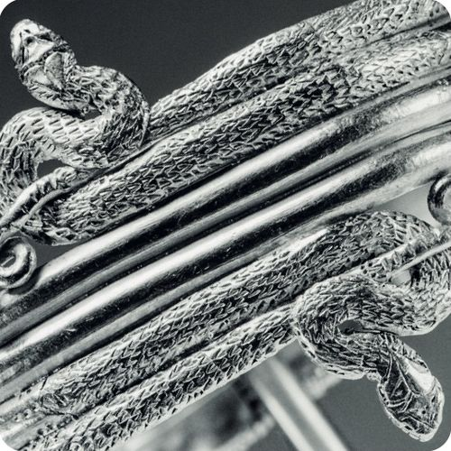
Wrist bracelet in the form of a coiled snake
Unknown artist/maker, 225–175 B.C.
Card 8
-
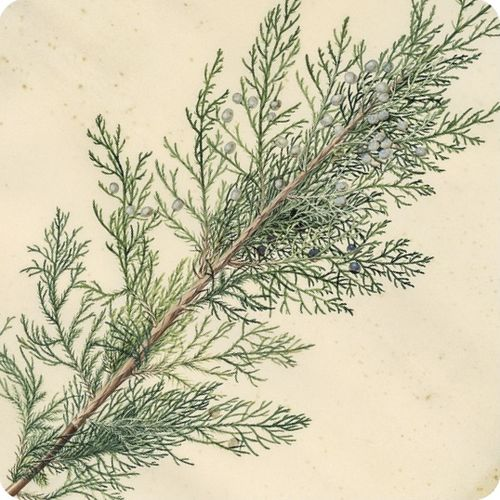
Juniper
Georg Dionysius Ehret (German, 1708 - 1770), 1745
Card 9
-
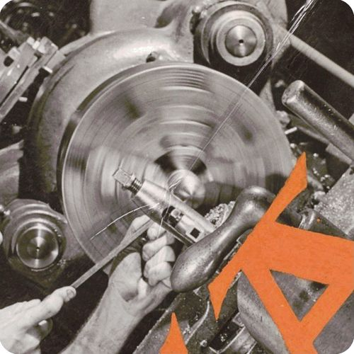
Pictorial Presentation. N.Y.A. Work Experience Activities in New York City. Produced by N.Y.A. Photography Workshop. Director Arnold Eagle
Arnold Eagle (American, 1909 - 1992), Arnold Eagle (American, 1909 - 1992), about 1940–1942
Card 10
-
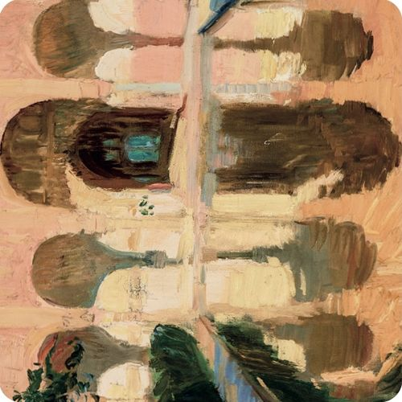
Hall of the Ambassadors, Alhambra, Granada
Joaquín Sorolla y Bastida (Spanish, 1863 - 1923), 1909
Card 11
-
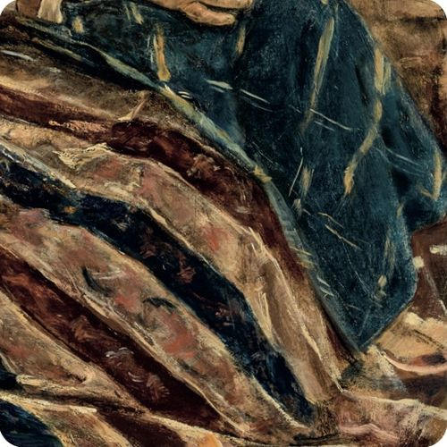
An Old Woman with Cat
Max Liebermann (German, 1847 - 1935), 1878
Card 12
The OuiSi x Getty Collaboration
Dedicated to fostering the enjoyment and understanding of the visual arts, the team at The J. Paul Getty Museum worked with Team OuiSi to curate an exclusive set of OuiSi Art Cards.
The Art Cards
Get the set
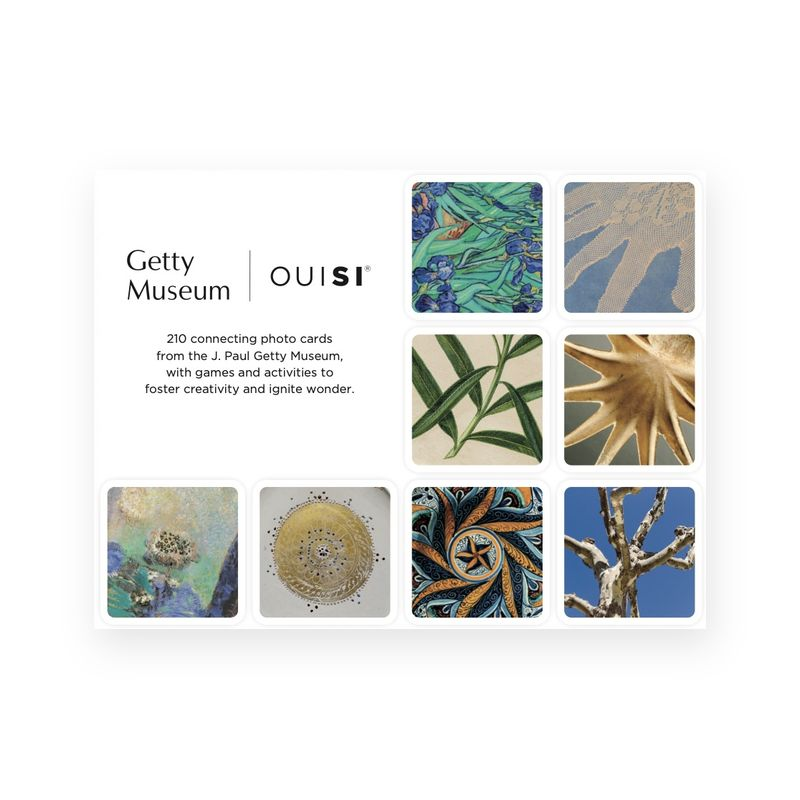